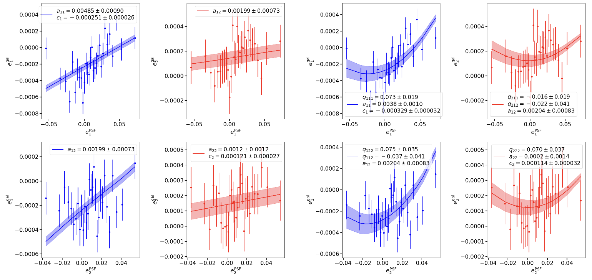
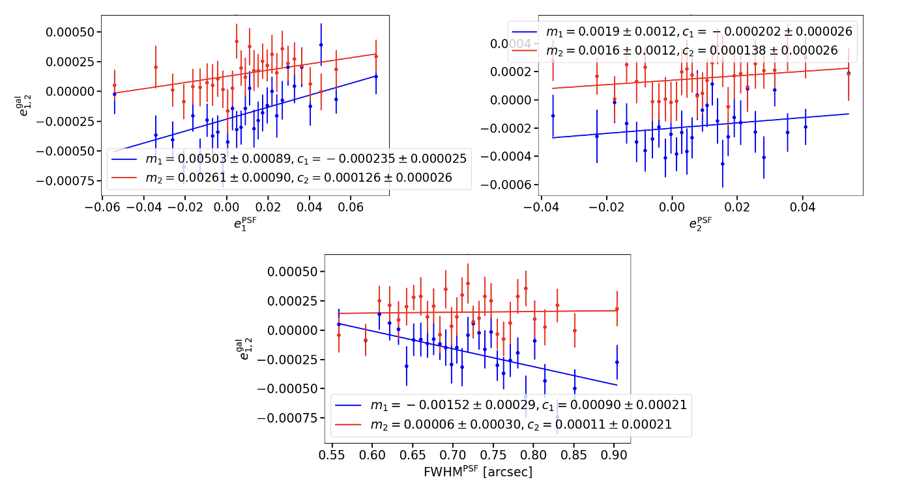
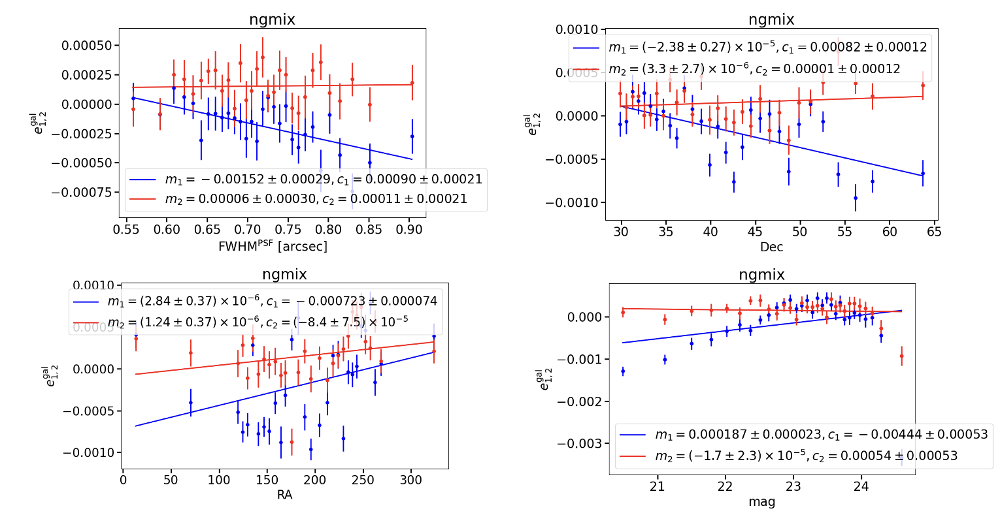
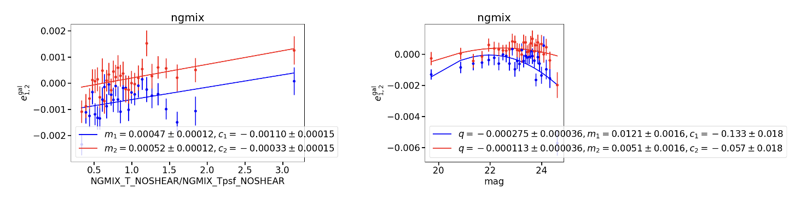
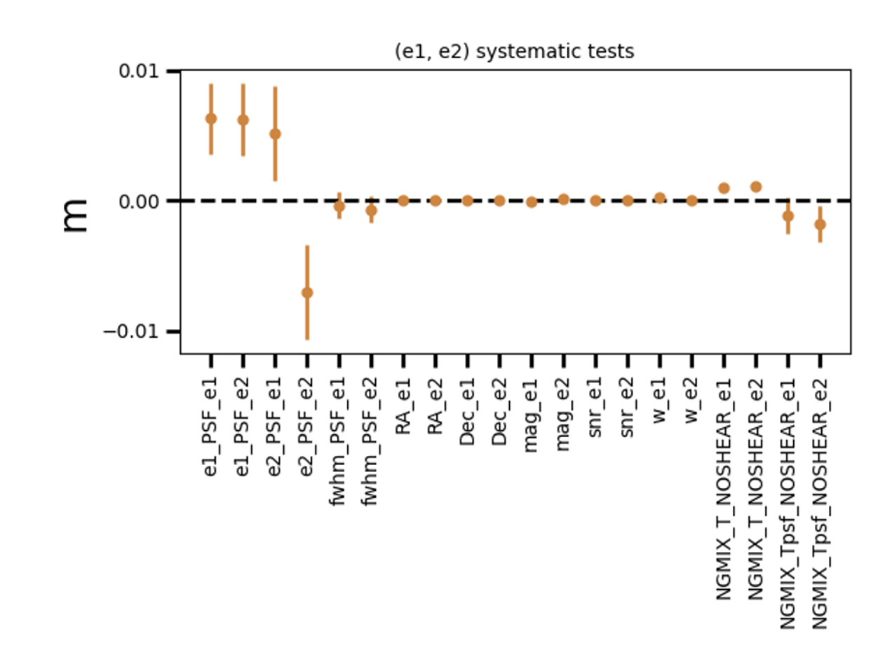

Leakage_object Tutorial¶
Python Script from sp_validation package (path :sp_validation/scripts/leakage_object.py)
Compute the Leakage from PSF ellipticity or any quantity, to galaxy ellipticity
Authors :
Martin Kilbinger
Axel Guinot
Clara Bonini
Input/Output¶
Input : Extended shear catalogue (with at least e1_gal, e2_gal and the quantities for the Leakage (e1_PSF and e2_PSF or Observational variables)
(for example :unions_shapepipe_extended_2022_v1.0.fits)Output :
For
--PSF_Leakage:Plots of the 2d Linear and quadratic Fits e_gal vs e_PSF
Plots 1d Linear fits of e_gal vs e_PSF and e_gal vs FWHM_PSF
Statistic file with the slopes
-> Example:
PSF Leakage Plots for unions_shapepipe_extended_2022_v1.0.fits. Command line:
leakage_object.py -i /path/unions_shapepipe_extended_2022.fits -o PSF_Leakage --PSF_Leakage -v


For
--Obs_Leakage:Plots 1d Linear or quadratic fits of e_gal vs quantities
Plots a recap with all the slopes
Statistic file with the slopes
-> Examples:
Leakage linear plots for
unions_shapepipe_extended_2022_v1.0.fitscatalogue of FWHM_PSF, Dec, RA, mag quantities: (with--linearoption). Command line:
leakage_object.py -i /path/unions_shapepipe_extended_2022.fits -o Obs_Leakage --Obs_Leakage --header --linear -v

Leakage linear and quadratic Plots for P3 (SP) of T_gal/T_psf and mag. Command line for left plot:
leakage_object.py -i /path/unions_shapepipe_extended_2022.fits -o Obs_Leakage --Obs_Leakage --header --linear --ratio -v
Right plot:
leakage_object.py -i /path/unions_shapepipe_extended_2022.fits -o Obs_Leakage --Obs_Leakage --header --quadratic -v

Example of a recap plot with all the slopes for various quantity of P3 (SP). Command line :
leakage_object.py -i /path/unions_shapepipe_extended_2022.fits -o Obs_Leakage --Obs_Leakage --header --linear -v

Options¶
_* : mandatory options in command line
Path Options¶
--input_path_shear* (string): Give the extended shear catalogue (as the unions or the Lensfit catalogue)
--output_dir (string) : Output directory label
Options for changing the label of the usual default columns of the catalogue¶
--e1_col (string)
--e2_col (string)
--e1_PSF_col (string)
--e2_PSF_col (string)
--size_PSF_col (string)
--RA (string)
--Dec (string)
--mag (string)
Leakage Options* (choose at least one or both)¶
--PSF_Leakage (store_true): will run the PSF Leakage
--Obs_Leakage (store_true): will run the Leakage of various quantities
Fits Options for --Obs_Leakage (linear fit by default if no options)¶
--linear (store_true) : for a linear fit
--quadratic (store_true) : for a quadratic fit
Ratio Options¶
--ratio (store_true): will compute the Leakage of a ratio between two columns (with Leakage of other quantities)
--ratio_alone (store_true): will compute the Leakage of a ratio between two columns and end the program (no Leakage of other quantities)
--ratio_label (string): change the label of the ratio for the plot ticks (can be long in the plot compared with the other names)
Other Options¶
--shapes (-s) (string) : change the measurement method
--verbose (-v) (store_true) : verbose output
--test (-t) (store_true) : test of 2D fit (only for PSF Leakage)
--header (store_true): Run interactive session : print the header of the catalogue and allow to choose the variables for the Leakage by typing them in the terminal (useful when you don’t know the precise label of the variables or don’t want to change the labels one by one with other options), without it will run the leakage for default variables put in an array (label_quant) (can manually change this array in the main function to not passing by this option)
Examples of basic command lines :¶
#PSF Leakage :
leakage_object.py -i /path/unions_shapepipe_extended_2022.fits -o PSF_Leakage --PSF_Leakage -v
#Observatinnal quantities Leakage :
leakage_object.py -i /path/unions_shapepipe_extended_2022.fits -o Obs_Leakage --Obs_Leakage --header --linear -v
#For both :
leakage_object.py -i /path/unions_shapepipe_extended_2022.fits -o Leakage --PSF_Leakage --Obs_Leakage --header --linear -v
Main Function :¶
Set default parameters
Command line options checks and updates
Saving log file with the command line and create the output directory
Configuration of the shape measurement
Open the input shear fits file and extract the data
if
--PSF_Leakage-> create a statistic file and run thePSF_leakage(...)functionif
--Obs_Leakage-> create a statistic file and run theObs_Leakage(...)function
Functions :¶
PSF_leakage(dat,param,stats_file): Computes and plots object-by-object PSF Leakage relations -> Plots 2d correlation with the functioncorr_2d()of theleakage.pymodule -> Plots 1d affine correlation for the e_gal vs e_PSF and the e_gal vs PSF_size with theaffine_corr_n()function of theleakage.pymoduleObs_Leakage(dat_shear,param,stats_file2): Computes and plots object-by-object any quantities Leakage relations -> In function of the options of the command line as — —ratio, — —header… computes the relation between the input or default quantities and the galaxy ellipticities and plot it with the functioncorr_any_quant()of theleakage.pymodule
Functions imported from leakage.py library module¶
PSF Leakage fit functions:¶
For 2d correlation :
corr_2d(...): computes and plots 2D linear and quadratic correlations of (y1, y2) as function of (x1, x2)
For 1d linear correlation:affine_corr_n(...): computes n affine correlations of y(m) vs x_arr[n]affine_corr(...): computes and plots affine correlation of y(n) as function of x (usefunc_bias_lin_1d()andloss_bias_lin_1d()for the computation of linear model)
Obs_Leakage Linear fit functions:¶
corr_any_quant(dat,param,stats_file,label_quant,ratio): In function of the options — —linear or — —quadratic in the command line, computes the linear or the quadratic best fit for the n quantities of the array label_quant and/or the ratio, with the fits functionsaffine_corr_n_quant()andquad_corr_n_quant()affine_corr_n_quant(...): edited version ofaffine_corr_n()which extracts the slopes with the errors and the names associate from the functionaffine_corr_quant()and plots a recap of the slopes as a function of the quantity. (Cf Output)affine_corr_quant(...): edited version ofaffine_corr()which computes the best linear fit for each quantity for all the values and plot the binned ellipticity of galaxies as a function of the quantities and return the slope, the error and the name for each quantity (usefunc_bias_lin_1d()andloss_bias_lin_1d()for the computation of linear model)affine_corr_n_quant(...);affine_corr_quant(...);loss_bias_quad_1d(...);func_bias_quad_1d(...)-> same but for quadratic model